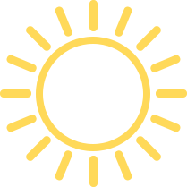

Ezelsoor - museumplein
About:
The ezelsoor, of muelsear in English is the back of the entrance of the albert heijn. On it you will find real grass on which you can perfectely sit and smoke a blunt in the sun. And sometimes in the winter when it snows you can remove the trunks off a skateboard and use it to snowboard down. Defenetly one of the best places to hang when the weather is right.